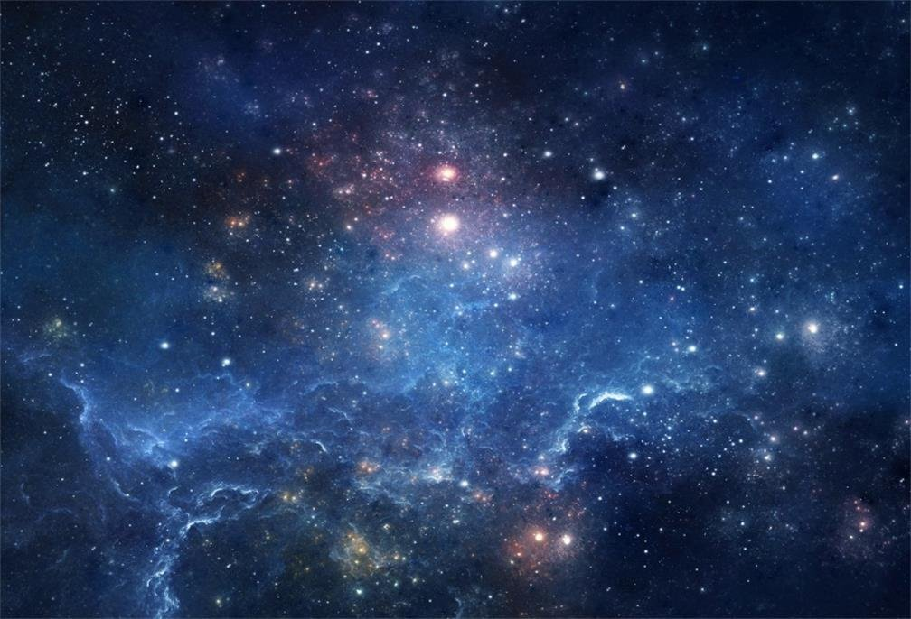

URBAN ASTRONOMERS • CAIRNS
● LIVE
Connecting…
Our solar system is waiting…
Scan a colouring sheet QR code and launch the first planet.
0
worlds created
🔥 closer = warmer + faster • ❄️ further = colder + much slower
Pause
Hide all